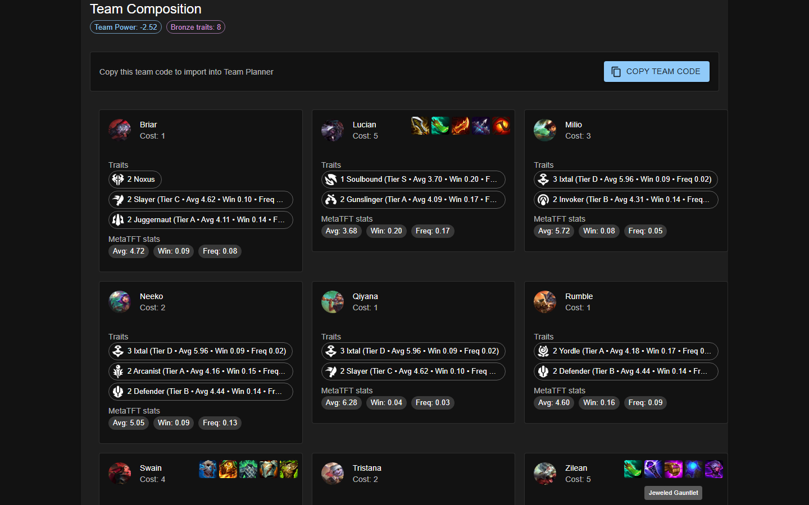
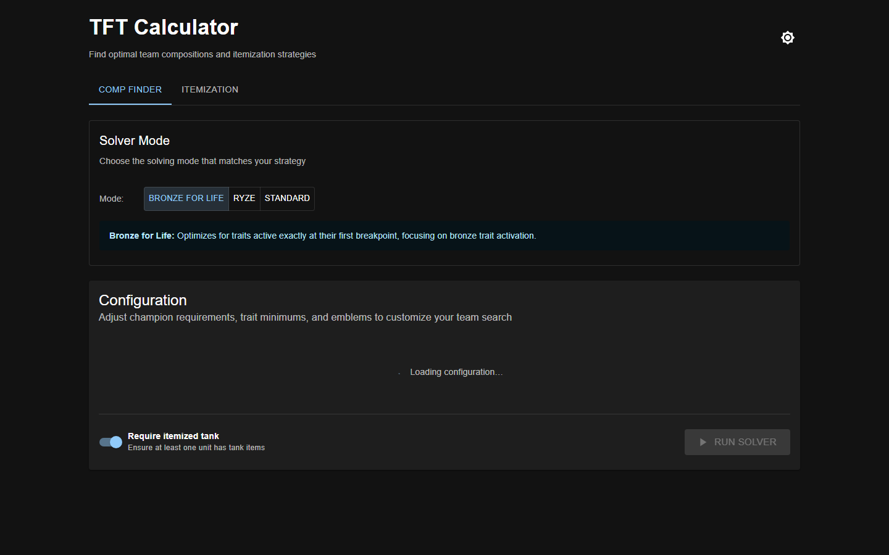

Turning team constraints into searchable choices.
A configurable composition-search tool for Teamfight Tactics, with an interface that explains the roster and traits it selects.
- My role
- Personal project
- Project year
- 2026
- Evidence
- Runtime evidence
- Built with
- React · TypeScript · MUI · FastAPI · Python

Why build it?
A team has limited slots, while champions share overlapping traits and compete for items. Considering every combination manually quickly becomes impractical.
What I built.
I connected a Python beam-search solver to FastAPI and a React configuration interface. The project handles required and banned champions, trait constraints, emblem limits, solver modes, and itemization. Results expose the roster, trait summary, requirements, and diagnostics.
How it works.
- 1
Set constraints
Choose a solver mode and configure champion, trait, and emblem requirements.
- 2
Search a bounded frontier
Expand candidate teams and retain a limited beam of promising states.
- 3
Review the result
Inspect the roster and active traits, then copy a team-planner code.
Look at the work.
Ran the actual React frontend and FastAPI solver against bundled TFT16 data. The captured default run selected a nine-unit team with eight bronze traits. These are demo results, not current-patch recommendations.

Decisions & tradeoffs.
Open each note for the implementation boundary, tradeoff, and next engineering question.
01Beam search trades completeness for cost
Exhaustive search grows rapidly with roster size. A bounded beam makes search practical, but pruning can discard a team that would become stronger later. Beam width and seed selection affect quality and runtime; the result is not proof of a global optimum.
02Make configuration and data versions explicit
Schema-driven forms expose the backend configuration contract, while the backend owns validation and solving. Bundled game data and optional exported statistics inform scoring. A score only makes sense against the dataset that produced it.
ui_api/main.py · bfl/solver_api.py · frontend/src/components/ResultsSection.tsx
What this demonstrates.
Game data and balance change. Imported statistics can become stale, and an objective score is not a match-outcome prediction. A useful next check is comparison with exhaustive solutions on small fixtures.
Explore the implementation
Explore the source ↗Screenshots and output are evidence of the stated demonstration, not a claim that every feature or failure mode was tested.
Interested in the thinking behind it?
I’m happy to discuss the implementation, its limitations, and how I would develop it further.